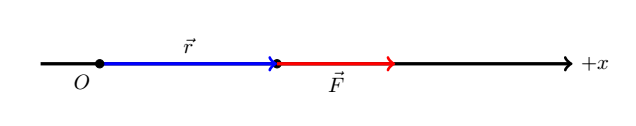
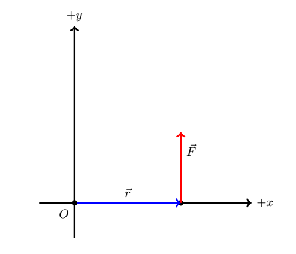
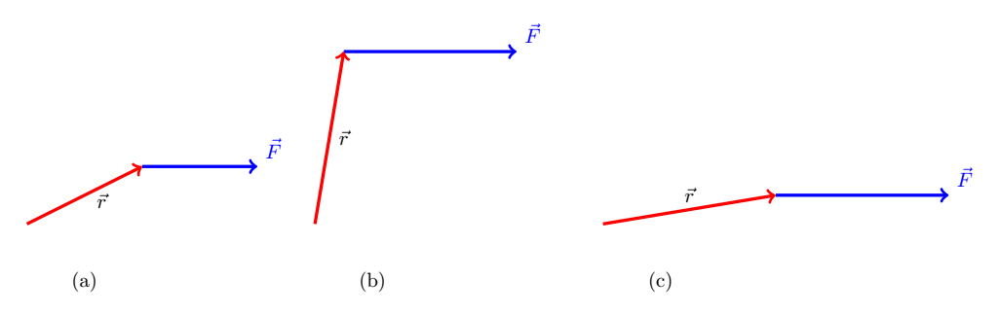
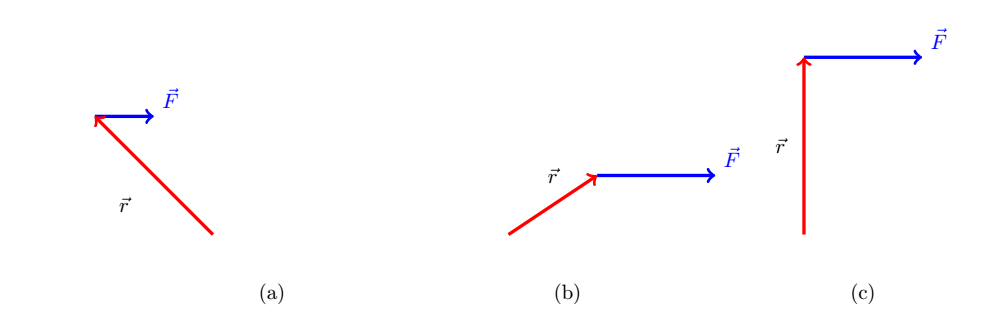
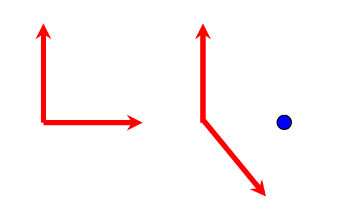
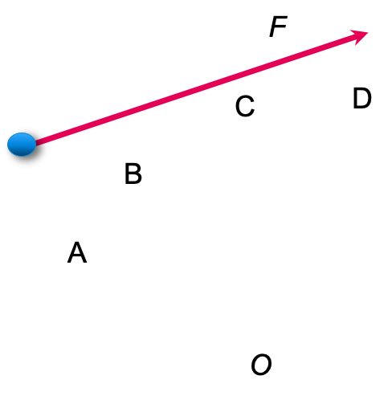

B9.2 Rotational Force - Point Particle Part 2#
B9.2.1 Motivation#
If you recall, we have to approaches to define the angular momentum of a point particle :
In the Rotational Force: Point Particle Part 1, we showed how we could define the net torque on a point particle by using Equation (1). In this note, we will see how we can use Equation (2) to define the torque, and realize a major difference in the two approaches.
B9.2.2 Net Torque in terms of Net Force#
We will start with Equation (3) from Rotational Force: Point Particle Part 1 notes, but in vector form:
If we insert Equation (2) into the above equation, we have
Apply the product rule for derivatives:
Since \(\frac{d\vec{r}}{dt} = \vec{v}\) and \(\vec{p} = m\vec{v}\), the second term on the right side is a cross-product between the same velocity vector (\(\vec{v}\times\vec{v}\)) and is therefore zero. We then have
The derivaitve is simply the net force acting on the particle:
Equation (4) is useful when we have direct knowledge about the net force applied to the particle instead of knowledge of its change in motion. However, Equation (4) goes beyond the net force as we will see in the next section.
B9.2.3 Torque due to Individual Forces#
Let us write Equation (4) slightly different using summation notation:
where we are summing over each indiviual force acting on the particle. We can distribut the cross product:
The term we are summing over can be interpretated as the torque due to a single force acting on the particle:
and we identify the torque acting on a point particle due to a single force as
It is very important to understand the difference between Equations (4) and (5). They look very similar but their meanings are different!
The vecor \(\vec{r}\) is the directed line segment from a point of interest (poi) to the point where the force is acting. In some cases it is the position vector, in other cases it is not. We say: the torque about the point of interest
The point of interest is often referred to as the pivot point.
Example 1
A point particle is located at \(x = 3.0\) m and a force \(f = 2.0\) N is acting on the particle in a direction of the positive x-axis as shown in the Figure below.
Find the torque on the particle around the orgin due to the applied force.
Solution
First, we recognize that the position vector is the directed line segment from the POI to the point of interaction. We also recognize that the position vector and force vector are parallel. Using the geometric definition of the cross product, we have for the magnitude of the torque:
Inserting our numbers:
There is no torque, and the particle will not experience an angular acceleration due to this force, but will simply experience a linear acceleration.
Example 2
Consider the same particle as in Example 1, but now the direction of the applide force is along the +y-direction.
In this case, we have for the magnitude of the torque around the origin:
Inserting our numbers:
The direction is obtained by using the right-hand rule and yields a torque in the direction of the positive z-axis. Our final answer is:
NOTE: the torque is along the z-axis since the particle will experience a change in rotational motion around the z-axis (its motin is in the xy-plane, rotating around the z-axis).
A point particle is located at \(x = 3.0\) m and a force \(f = 2.0\) N is acting on the particle. The force is directed as shown in Example 2 above.
Find the torque on the particle due to the force around the point x = 3.0 m.
Find the torque on the particle due to the force around the point y = 4.0 m.
Find the torque on the particle due to the force around the point (x,y) = (1.0 m, 1.0 m).
A point particle is located at \((x,y,z) = (3.0,2.0,-1.0)\) m and a force \(\vec{f} = (0.0 ,2.0,3.0)\) N is acting on the particle.
Find the torque on the particle due to the force around the origin.
Find the torque on the particle due to the force around the point y = 4.0 m.
Find the torque on the particle due to the force around the point (x,y) = (1.0 m, 1.0 m).
A point particle is located at a position given by \(\vec{r}\) and subject to a force \(\vec{F}\) in the three scenarios shown below.
Rank the torque around the origin from smallest to largest.
A point particle is located at a position given by \(\vec{r}\) and subject to a force \(\vec{F}\) in the three scenarios shown below.
Rank the torque around the origin from smallest to largest.
The four forces shown all have the same magnitude: F1 = F2 = F3 = F4. Which force produces the greatest torque about the point O (marked by the blue dot)?
Which of the four forces shown here produces a torque about O that is directed out of the plane of the drawing?
B9.2.4 The Lever Arm#
In engineering, the torque is sometimes referred to as the moment, but this is not the time to ridicule engineers. Another term that is often used in engineering and may be familar to you is the lever arm. The lever arm is the perpendicular vector component directed line segment from the pivot point (or POI) to the point of interaction. If we denote \(\vec{r}_\perp\) as the lever arm, then the magnitude of the torque around a pivot point acting on a particle due to an interaction \(\vec{f}\) is
since the angle between the two vectors is \(90^\circ\).
A force F acts on the particle shown, which dashed line represents the magnitude of the lever arm component vector for the force about point O?
